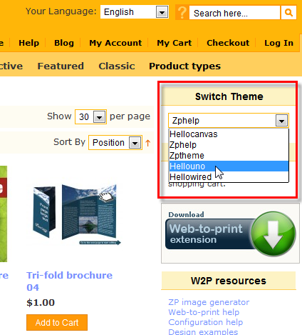
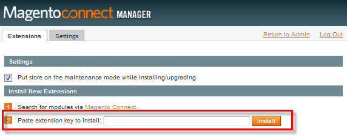

<?xml version="1.0" encoding="UTF-8"?><rss version="2.0"
	xmlns:content="http://purl.org/rss/1.0/modules/content/"
	xmlns:wfw="http://wellformedweb.org/CommentAPI/"
	xmlns:dc="http://purl.org/dc/elements/1.1/"
	xmlns:atom="http://www.w3.org/2005/Atom"
	xmlns:sy="http://purl.org/rss/1.0/modules/syndication/"
	xmlns:slash="http://purl.org/rss/1.0/modules/slash/"
	>

<channel>
	<title>Web-to-print themes &#8211; Magento web-to-print &amp; dynamic imaging</title>
	<atom:link href="http://www.zetaprints.com/magentohelp/category/themes-for-web-to-print/feed/" rel="self" type="application/rss+xml" />
	<link>http://www.zetaprints.com/magentohelp</link>
	<description>Just another WordPress site</description>
	<lastBuildDate>Fri, 07 Jun 2013 06:55:21 +0000</lastBuildDate>
	<language>en-US</language>
	<sy:updatePeriod>hourly</sy:updatePeriod>
	<sy:updateFrequency>1</sy:updateFrequency>
	<generator>https://wordpress.org/?v=4.4.1</generator>
	<item>
		<title>Interactive personalization theme</title>
		<link>http://www.zetaprints.com/magentohelp/enable-interactive-personalization/</link>
		<pubDate>Thu, 28 Jul 2011 12:17:45 +0000</pubDate>
		<dc:creator><![CDATA[atanas]]></dc:creator>
				<category><![CDATA[Web-to-print themes]]></category>

		<guid isPermaLink="false">http://www.zetaprints.com/magentohelp/?p=13147</guid>
		<description><![CDATA[Interactive personalization on a web-to-print product gives users an option of using a “point and click” method during personalization. It can be enabled using our zpadvancedtheme for that product or for the entire site. Interactive personalization is a convenient way of editing a web-to-print preview image, but sometimes it is easier to fill in a [&#8230;]]]></description>
				<content:encoded><![CDATA[<p><a title="Interactive web-to-print personalization for Magento" href="../../../../magento-web-to-print/magento-interactive-personalization/">Interactive personalization</a> on a web-to-print product gives users an option of using a “point and click” method during personalization. It can be enabled using our <strong>zpadvancedtheme</strong> for that product or for the entire site.<span id="more-13147"></span></p>
<p>Interactive personalization is a convenient way of editing a web-to-print preview image, but sometimes it is easier to fill in a form. You may want to enable this in-preview editing for all products on the site or only some.</p>
<p>InPreview feature is available in <a title="web-to-print releases" href="https://www.magentocommerce.com/magento-connect/web-to-print-and-dynamic-imaging.html">web-to-print extension</a> starting <em>Version 1.9.1 beta 14</em>.</p>
<h2>Interactive web-to-print per-product</h2>
<p>Lets activate the interactive personalization feature on a web-to-print product. Navigate to the product information page in Magento admin panel (<em>Top menu / Catalog / Manage Products / Product name</em>) and click on <strong>Design </strong>tab. From the <strong>Custom Design</strong> drop-down menu, select <strong>zpadvancedtheme</strong> and save your changes.</p>
<p></p>
<div style="display: table;">
<p></p>
<div style="position: relative; top: 35px; display: inline;">
<p>This will activate the interactive personalization feature for that product. Users will be able to click on a variable web-to-print area and use a pop-up form to personalize it.</p>
<p>Try this feature on a <a href="../../../../magento/index.php/featured/interactive-personalization.html">demo product</a> in our web-to-print <a href="../../../../magento-web-to-print/magento-demo-store/">demo store</a>.</p>
</div>
</div>
<h2>Site-wide interactive web-to-print</h2>
<p>All products in a web-to-print store can have interactive personalization set by default. Instead of assigning it separately for each product as explained above, you can do so on a global level. Navigate to <em>System / Configuration / Design tab / Themes</em> in Magento Admin panel and set <strong>zpadvancedtheme</strong> in the <strong>Layout</strong> field.</p>
<p></p>
<h2>Overlapping fields</h2>
<div style="display: table;">
<p></p>
<div style="position: relative; top: 35px; display: inline;">
<p>Overlapping fields (Ex. Text on top of a background image) show together in the same pop-up form, but as separate tabs.</p>
<p>This means that if you layer variable fields to overlap in the template file, clicking on the area they cover will bring up all of the fields in that area represented by a separate tab.</p>
</div>
</div>
<h2>Custom themes</h2>
<p>The <a title="Interactive web-to-print personalization for Magento" href="../../../../magento-web-to-print/magento-interactive-personalization/">interactive personalization</a> can be activated on a custom theme as well.</p>
<p>Lets say you&#8217;re using one of the <a title="HelloThemes web-to-print customization" href="../../../hellothemes-for-web-to-print/">HelloThemes</a> for your web-to-print store. If you follow the method explained above and assign <strong>zpadvancedtheme</strong> as the theme for the product, the HelloTheme will get overwritten and the product page will have that blue default Magento look. To avoid this, instead of setting <strong>zpadvancedtheme</strong> as the custom design theme, paste the following code in the <strong>Custom Layout Update</strong> field:</p>
<div class="codecolorer-container xml mac-classic" style="overflow:auto;white-space:nowrap;border:1px solid #9F9F9F;width:435px;"><table cellspacing="0" cellpadding="0"><tbody><tr><td style="padding:5px;text-align:center;color:#888888;background-color:#EEEEEE;border-right: 1px solid #9F9F9F;font: normal 12px/1.4em Monaco, Lucida Console, monospace;"><div>1<br />2<br />3<br />4<br /></div></td><td><div class="xml codecolorer" style="padding:5px;font:normal 12px/1.4em Monaco, Lucida Console, monospace;white-space:nowrap"><span style="color: #009900;"><span style="color: #000000; font-weight: bold;">&lt;reference</span> <span style="color: #000066;">name</span>=<span style="color: #ff0000;">&quot;head&quot;</span><span style="color: #000000; font-weight: bold;">&gt;</span></span><br />
<span style="color: #009900;"><span style="color: #000000; font-weight: bold;">&lt;action</span> <span style="color: #000066;">method</span>=<span style="color: #ff0000;">&quot;addItem&quot;</span><span style="color: #000000; font-weight: bold;">&gt;</span><span style="color: #000000; font-weight: bold;">&lt;type<span style="color: #000000; font-weight: bold;">&gt;</span></span></span>skin_js<span style="color: #009900;"><span style="color: #000000; font-weight: bold;">&lt;/type<span style="color: #000000; font-weight: bold;">&gt;</span></span><span style="color: #000000; font-weight: bold;">&lt;name<span style="color: #000000; font-weight: bold;">&gt;</span></span></span>js/zp-in-preview-edit.js<span style="color: #009900;"><span style="color: #000000; font-weight: bold;">&lt;/name<span style="color: #000000; font-weight: bold;">&gt;</span></span><span style="color: #000000; font-weight: bold;">&lt;/action<span style="color: #000000; font-weight: bold;">&gt;</span></span></span><br />
<span style="color: #009900;"><span style="color: #000000; font-weight: bold;">&lt;action</span> <span style="color: #000066;">method</span>=<span style="color: #ff0000;">&quot;addItem&quot;</span><span style="color: #000000; font-weight: bold;">&gt;</span><span style="color: #000000; font-weight: bold;">&lt;type<span style="color: #000000; font-weight: bold;">&gt;</span></span></span>skin_css<span style="color: #009900;"><span style="color: #000000; font-weight: bold;">&lt;/type<span style="color: #000000; font-weight: bold;">&gt;</span></span><span style="color: #000000; font-weight: bold;">&lt;name<span style="color: #000000; font-weight: bold;">&gt;</span></span></span>css/zp-in-preview-edit.css<span style="color: #009900;"><span style="color: #000000; font-weight: bold;">&lt;/name<span style="color: #000000; font-weight: bold;">&gt;</span></span><span style="color: #000000; font-weight: bold;">&lt;/action<span style="color: #000000; font-weight: bold;">&gt;</span></span></span>&gt;<br />
<span style="color: #009900;"><span style="color: #000000; font-weight: bold;">&lt;/reference<span style="color: #000000; font-weight: bold;">&gt;</span></span></span></div></td></tr></tbody></table></div>
<p></p>
<p>This update can be done to every template individually or you can use bulk attribute update to apply it all products in 1 go. You can also assign the interactive personalization XML update at a category level.</p>
<h2>CSS changes</h2>
<p>The default style of the image and text fields that customers encounter during the interactive personalization process can be customized using CSS. To change the looks of the different components involved, edit <strong>zp-in-preview-edit.css</strong> file located in <em>skin/frontend/base/default/css</em> folder of your Magento installation.</p>
<p>Highlighting shapes are represented by <strong>.zetaprints-field-shape</strong> css class, while the pop-up forms can be stylized using classes with &#8220;<strong>fieldbox</strong>&#8221; prefix.</p>
]]></content:encoded>
			</item>
		<item>
		<title>Byuing a theme for web-to-print</title>
		<link>http://www.zetaprints.com/magentohelp/byuing-a-theme-for-web-to-print/</link>
		<pubDate>Thu, 14 Jul 2011 20:42:35 +0000</pubDate>
		<dc:creator><![CDATA[admin]]></dc:creator>
				<category><![CDATA[Web-to-print themes]]></category>

		<guid isPermaLink="false">http://www.zetaprints.com/magentohelp/?p=13133</guid>
		<description><![CDATA[One of the main reasons to go with our Magento web-to-print package is the unlimited customization of the user interface. It means you will need to buy a custom theme and then integrate web-to-print into it or get us to do it for you. This post gives some points on how to choose a good [&#8230;]]]></description>
				<content:encoded><![CDATA[<p>One of the main reasons to go with our <a title="web-to-print and dynamic imaging" href="../../../../magento-web-to-print/">Magento web-to-print package</a> is the unlimited customization of the user interface. It means you will need to buy a custom theme and then <a title="Magento custom theme integration" href="../../../custom-theme-integration/">integrate web-to-print</a> into it or <a title="Premium web-to-print and dynamic imaging services" href="../../../../premium/index.php/web-to-print-support/custom-mage-theme-expr.html">get us to do it for you</a>. This post gives some points on how to choose a good theme.<span id="more-13133"></span></p>
<h2>Visuals</h2>
<p><strong>Q: Does this theme fit the functionality and the layout of your website?</strong></p>
<p><a title="web-to-print and dynamic imaging installation" href="../../installation-steps/">Set up your web-to-print portal</a> with our default web-to-print theme first and upload some templates to get a clear idea what the interface will look like and how many fields there are.</p>
<p>Configure the layout and widgets the way you want with the default theme.</p>
<p>This will give you a clear idea of what will be on your website. Now you can start looking for themes that fit the layout.</p>
<p>It is a good idea to create mock-ups using the desired layout and the styles of theme you want to purchase.</p>
<h2>Code</h2>
<p>You are unlikely to have access to the code of a commercial theme before paying for it. Ask a web designer to analyze the layout for you:</p>
<ul>
<li>Does the theme use Magento class names? (Yes = good)</li>
<li>Does the theme use unconventional layout? (Yes = more work)</li>
<li>Does the theme rely on JavaScript for building the layout? (Yes = problems)</li>
<li>Does the CSS look clean and logical?  (Yes = good)</li>
<li>Does it have a demo site running on a version of Magento you want to run it on? (No = drop it now)</li>
</ul>
<p>In any case, you should expect styling issues and possibly some JS functionality issues with the theme. Having someone to help you fix them is essential.</p>
<h2>Reputation</h2>
<ul>
<li>Do they actively support the theme?</li>
<li>Do they offer more than one theme?</li>
<li>Is there any feedback? Does it look genuine?</li>
<li>Send an email to their support and see if they reply.</li>
</ul>
<p>The main question is probably this:</p>
<ul>
<li>Does the seller offer a refund?</li>
</ul>
<h2>Danger zone</h2>
<p>Some themes are free or very cheap because they contain viruses, hidden links, back doors or <a title="Free themes - full of goodies" href="http://wpmu.org/why-you-should-never-search-for-free-wordpress-themes-in-google-or-anywhere-else/">other nasties</a>.</p>
<p>Some theme makers intentionally leave bugs in them to sell you additional services.</p>
<p>Most themes are of average quality, contain occasional bugs, are poorly supported, but work just fine after a bit of tidy up. Allow approximately 1 &#8211; 2 days of additional development time for this.</p>
]]></content:encoded>
			</item>
		<item>
		<title>HelloThemes for web-to-print</title>
		<link>http://www.zetaprints.com/magentohelp/hellothemes-for-web-to-print/</link>
		<pubDate>Sat, 25 Jun 2011 17:20:20 +0000</pubDate>
		<dc:creator><![CDATA[atanas]]></dc:creator>
				<category><![CDATA[Web-to-print themes]]></category>

		<guid isPermaLink="false">http://www.zetaprints.com/magentohelp/?p=12942</guid>
		<description><![CDATA[HelloThemes is an amazing collection of very well made Magento themes. We highly recommend them for web-to-print storefronts. As any other Magento theme, they need to be modified to enable our web-to-print extension. We provide free customization for their standard themes. Simply purchase a theme from them and we will supply several replacement files with [&#8230;]]]></description>
				<content:encoded><![CDATA[<p><a title="Buy a Magento theme" href="http://www.hellothemes.com/themes/">HelloThemes</a> is an amazing collection of very well made Magento themes. We highly recommend them for web-to-print storefronts. As any other Magento theme, they need to be modified to enable our  <a title="Magento web-to-print extension" href="https://www.magentocommerce.com/magento-connect/web-to-print-and-dynamic-imaging.html" target="_self">web-to-print extension</a>. We provide free customization for their standard  themes.<span id="more-12942"></span></p>
<p>Simply purchase a theme from them and we will supply several  replacement files with necessary web-to-print extension code in them via our <a title="Free HelloThemes web-to-print integration" href="../../../../premium/index.php/web-to-print-support/hello-themes-customization.html" target="_self">Premium web-to-print support</a> program.</p>
<h2>HelloTheme samples with web-to-print</h2>
<table id="thumbs_tbl">
<tbody>
<tr>
<td>
<p style="text-align: center;"><a href="../../../wp-content/themes/hellothemes_preview/hellocanvas_magento_theme_preview.png"></a></p>
<p style="text-align: center;"><a title="HelloCanvas theme at hellothemes.com" href="http://www.hellothemes.com/themes/hellocanvas/" target="_self">HelloCanvas</a></p>
</td>
<td>
<p style="text-align: center;"><a href="../../../wp-content/themes/hellothemes_preview/hellosixty_magento_theme_preview.png"></a></p>
<p style="text-align: center;"><a title="HelloSixty theme at hellothemes.com" href="http://www.hellothemes.com/themes/hellosixty/" target="_self">HelloSixty</a></p>
</td>
<td><a href="../../../wp-content/themes/hellothemes_preview/hellowired_magento_theme_preview.png"></a></p>
<p style="text-align: center;"><a title="HelloUno theme at hellothemes.com" href="http://www.hellothemes.com/themes/hellouno/" target="_self">HelloUno</a></p>
</td>
<td><a href="../../../wp-content/themes/hellothemes_preview/hellouno_magento_theme_preview.png"></a></p>
<p style="text-align: center;"><a title="HelloWired theme at hellothemes.com" href="http://www.hellothemes.com/themes/hellowired/" target="_self">HelloWired</a></p>
</td>
</tr>
</tbody>
</table>
<p>Apart from live demos on <a title="Buy a Magento theme" href="http://www.hellothemes.com/themes/">HelloThemes.com</a>, you can also visit our <a title="Magento web-to-print Demo store" href="../../../../magento/" target="_self">demo store</a> to see the themes in action. Our free <a title="Theme switcher extension for Magento" href="../../../theme-switcher-extension/" target="_self">theme switcher</a> extension for Magento allows you to switch between several themes and see how the web-to-print <a title="Magento web-to-print extension features" href="../../../../magento-web-to-print/features/" target="_self">features</a> were implemented before making your choice.</p>
<div style="display: table;">
<p></p>
<div style="position: relative; top: 15px; display: inline;">Navigate to a <a title="Brochure web-to-print demo product" href="../../../../magento/index.php/product-types/brochures/a4-brochure-01.html" target="_self">demo product</a> in our demo store and chose a theme from the sidebar theme switcher drop-down menu.</div>
</div>
<h2>Enable web-to-print capabilities</h2>
<p>We provide <a title="HelloThemes web-to-print customization" href="../../../../premium/index.php/web-to-print-support/hello-themes-customization.html" target="_self">free web-to-print customization</a> for HelloThemes. Visit our premium <a title="Web-to-print premium support" href="../../../../premium/" target="_self">support store</a> and get the files required to add web-to-print functionality to any of HelloThemes.</p>
<p><strong>Note.</strong> Other custom themes can also be <a title="Magento custom theme integration" href="../../../custom-theme-integration/" target="_self">adapted for web-to-print</a>.</p>
<h2>Free header and slideshow templates</h2>
<p>In order to make it even easier for you, we&#8217;ve developed a few <a title="Dynamic imaging templates" href="../../../../category/dynamic-imaging/" target="_self">dynamic imaging</a> templates for header backgrounds and slideshow slides that come with HelloThemes.</p>
<p>True personalization is only possible with custom banners, images, logos, slideshows etc. These are easily replaceable in a HelloTheme if you have the required images handy. Instead of spending your time and money designing a custom header, you only need to</p>
<ol>
<li>personalize it in a few clicks,</li>
<li>download the file and</li>
<li>upload it.</li>
</ol>
<h3>Example</h3>
<p>Lets say you decided to go with <a title="HelloKids them at hellothemes.com" href="http://www.hellothemes.com/themes/hellokids/" target="_self">HelloKids</a> theme for your store. The theme it self comes together with an optional slideshow for the homepage. The slides that come with the theme are generic placeholders and if you would to use a slideshow, you need to personalize them. Here&#8217;s a personalizable dynamic imaging template for that particular slideshow.</p>
<p><object id="e-cards-plugin" classid="clsid:d27cdb6e-ae6d-11cf-96b8-444553540000" width="600" height="400" codebase="http://download.macromedia.com/pub/shockwave/cabs/flash/swflash.cab#version=6,0,40,0"><param name="align" value="middle" /><param name="allowScriptAccess" value="sameDomain" /><param name="allowFullScreen" value="false" /><param name="quality" value="high" /><param name="bgcolor" value="#666666" /><param name="FlashVars" value="params=http://vadesigner.zetaprints.com/?page=template-xml;TemplateID=EDAA9174-F403-43F4-A253-61AA9CAFF52A" /><param name="src" value="http://www.zetaprints.com/flash/e-cards-plugin.swf" /><param name="name" value="e-cards-plugin" /><param name="flashvars" value="params=http://vadesigner.zetaprints.com/?page=template-xml;TemplateID=EDAA9174-F403-43F4-A253-61AA9CAFF52A" /><param name="allowfullscreen" value="false" /><embed id="e-cards-plugin" type="application/x-shockwave-flash" width="600" height="400" src="../../../../flash/e-cards-plugin.swf" name="e-cards-plugin" flashvars="params=http://vadesigner.zetaprints.com/?page=template-xml;TemplateID=EDAA9174-F403-43F4-A253-61AA9CAFF52A" bgcolor="#666666" quality="high" allowfullscreen="false" allowscriptaccess="sameDomain" align="middle"></embed></object></p>
<p>Replace the text, save the image and upload it to <em>/media/helloslide</em> folder of your Magento installation.</p>
<p>Look for more <a title="HelloThemes free dynamic imaging templates" href="http://vadesigner.zetaprints.com/?page=catalogue;CorporateID=D6272F67-32AD-4FD6-8501-EE955853E506" target="_self">HelloThemes templates</a>.</p>
]]></content:encoded>
			</item>
		<item>
		<title>Magento theme hiearachy</title>
		<link>http://www.zetaprints.com/magentohelp/magento-theme-hiearachy/</link>
		<pubDate>Sat, 25 Jun 2011 13:15:57 +0000</pubDate>
		<dc:creator><![CDATA[atanas]]></dc:creator>
				<category><![CDATA[Web-to-print for developers]]></category>
		<category><![CDATA[Web-to-print themes]]></category>

		<guid isPermaLink="false">http://www.zetaprints.com/magentohelp/?p=12900</guid>
		<description><![CDATA[Magento themes follow a type of fallback hierarchy which is very similar to cascading in CSS. That means that there is one base theme (by default this is /app/design/frontend/base/default theme) that can handle any detail in a Magento site and there are one or more user defined themes that can override some or all parts [&#8230;]]]></description>
				<content:encoded><![CDATA[<p>Magento themes follow a type of fallback hierarchy which is very similar to cascading in CSS. That means that there is one base theme (by default this is <em>/app/design/frontend/base/default theme</em>) that can handle any detail in a Magento site and there are one or more <a title="Magento custom theme integration" href="../../../custom-theme-integration/" target="_self">user defined themes</a> that can override some or all parts of the base theme.<span id="more-12900"></span></p>
<h2>Assigning custom themes</h2>
<p>Admin-defined themes are set in Magento admin panel. There are a few ways to set user themes. You can</p>
<ol>
<li>set custom design in <em>System &gt; Design tab</em> or</li>
<li>set the theme in <em>System &gt; Configuration &gt; Design</em></li>
</ol>
<p>First method should be used only for <em>short term</em> design changes such as holiday inspired themes or some other short therm event. By using the second method you can add your own default theme that can be used to look up features that cannot be found in your custom theme. Then you can have: <strong>User theme &gt; User default theme &gt; Base default theme</strong>. Any design resource (<em>phtml templates, xml layouts, translations, css, JavaScript, images</em>) are looked up in this order.</p>
<p>You can also be more specific by setting user themes on lower level. You can set custom design by category, by product bases. You can set custom theme for each <em>CMS page</em> separately. Setting custom theme for category also gives the option to set that theme for all subcategories and/or products. The lower level you set a theme the more precedence it takes. Just like CSS.</p>
<p>If an admin sets theme in <em>System &gt; Configuration &gt; Design</em> and then applies custom design in <em>System &gt; Design</em> the latter takes precedence and overrides any <em>System &gt; Configuration &gt; Design</em> settings for the store.</p>
<p>If you define custom design on the lower levels mentioned above, it will override store design at that level.</p>
<h2>Examples</h2>
<p>Let&#8217;s see how Magento processes installed custom theme files. For instance, if category listing page calls for a template called <em>view.phtml</em> (in which case this template becomes a required file), but the application is unable to find the file in the theme highest in hierarchy, it will look to the next theme highest in hierarchy to find the file. Should this fail, it will continue working down the hierarchy of themes until it’s able to locate the file called <em>view.phtml</em>, upon which the application will load it to the store and terminate the search. This method of building design is called <strong>fallback</strong>, because the application &#8220;falls back&#8221; to the next possible source of required files in order to retrieve and load it.</p>
<p><strong>Note.</strong> The theme highest in hierarchy is the theme that you assign through the <em>System &gt; Configuration &gt; Design</em>, and the theme lowest in hierarchy is the theme called <em>default</em> in base package that Magento automatically loads into the store. Highest theme may be overridden with lower level design settings.</p>
<p>Let’s say you have three themes assigned to your store and each of these themes contain the following files:</p>
<table id="hier_tbl_li">
<tbody>
<tr id="hier_tbl_head">
<td style="text-align: center;"><strong>base/default </strong></td>
<td style="text-align: center;"><strong>My theme 1 </strong></td>
<td style="text-align: center;"><strong>My theme 2 </strong></td>
</tr>
<tr>
<td rowspan="5">All required files</td>
<td>templates/3-col-layout.phtml</td>
<td>templates/3-col-layout.phtml</td>
</tr>
<tr>
<td>templates/header.phtml</td>
<td></td>
</tr>
<tr>
<td>images/logo.gif</td>
<td></td>
</tr>
<tr>
<td>css/base.css</td>
<td>css/base.css</td>
</tr>
<tr>
<td>css/boxes.css</td>
<td></td>
</tr>
</tbody>
</table>
<p>Let’s also assume that the three themes are assigned this hierarchy:</p>
<table id="hier_tbl_li">
<tbody>
<tr>
<td>HIGHEST</td>
<td>My theme 2</td>
<td>set as store theme in admin</td>
</tr>
<tr>
<td></td>
<td>My theme 1</td>
<td>set as user default theme</td>
</tr>
<tr>
<td>LOWEST</td>
<td>default</td>
<td>default magento theme</td>
</tr>
</tbody>
</table>
<p>At close observation, you’ll see that there are few redundant files such as <em>templates/3-col-layout.phtml</em> and <em>css/base.css</em></p>
<p>What does this mean?<br />
Well, let us remind you that the files in above table are how you see the files in each theme folders and not how Magento sees it.</p>
<p>Magento sees the same file structure like this:</p>
<table id="hier_tbl_li">
<tbody>
<tr id="hier_tbl_head">
<td style="text-align: center;"><strong>base/default </strong></td>
<td style="text-align: center;"><strong>My theme 1 </strong></td>
<td style="text-align: center;"><strong>My theme 2 </strong></td>
</tr>
<tr>
<td rowspan="5">All required files</td>
<td></td>
<td>templates/3-col-layout.phtml</td>
</tr>
<tr>
<td>templates/header.phtml</td>
<td></td>
</tr>
<tr>
<td>images/logo.gif</td>
<td></td>
</tr>
<tr>
<td></td>
<td>css/base.css</td>
</tr>
<tr>
<td>css/boxes.css</td>
<td></td>
</tr>
</tbody>
</table>
<p>You’ll notice how Magento ignores the version of the redundant file lower in hierarchy and recognizes only the version higher in hierarchy. This is because it’s already found the required file and need not search for it any longer, therefore terminating the search for that specific file while continuing the search for other required files yet to be found.</p>
<h2>Further reading</h2>
<p>This post is a high level overview to help skilled programmers understand the basics of theme hierarchy in Magento. You need to read <a title="Magento " href="http://www.magentocommerce.com/design_guide">current Magento documentation</a> for more detailed information.</p>
]]></content:encoded>
			</item>
		<item>
		<title>Theme switcher extension</title>
		<link>http://www.zetaprints.com/magentohelp/theme-switcher-extension/</link>
		<pubDate>Tue, 10 May 2011 12:20:03 +0000</pubDate>
		<dc:creator><![CDATA[atanas]]></dc:creator>
				<category><![CDATA[Web-to-print themes]]></category>
		<category><![CDATA[Preview]]></category>
		<category><![CDATA[Skins]]></category>
		<category><![CDATA[Themes]]></category>

		<guid isPermaLink="false">http://www.zetaprints.com/magentohelp/?p=12769</guid>
		<description><![CDATA[This extension is no longer supported. A fun feature for your web-to-print store to let customers choose from a variety of front-end themes. Our free Theme switcher extension for Magento adds a feature to the front-end of your web-to-print store enabling users to switch between different themes. This could prove quite useful if you like [&#8230;]]]></description>
				<content:encoded><![CDATA[<h4><span style="color: #ff0000;">This extension is no longer supported.</span></h4>
<p>A fun feature for your web-to-print store to let customers choose from a variety of front-end themes.<span id="more-12769"></span></p>
<div style="display: table;">
<p></p>
<div style="position: relative; top: 15px; display: inline;">
<p>Our free <a title="Theme switcher extension for Magento" href="https://www.magentocommerce.com/magento-connect/ZetaPrints/extension/6454/zetaprints_theme" target="_self">Theme switcher</a> extension for Magento adds a feature to the front-end of your web-to-print store enabling users to switch between different themes.</p>
<p>This could prove quite useful if you like your customers to be able to choose their favorite look of your web-to-print shop themselves.</p>
</div>
</div>
<h2>Theme switcher installation</h2>
<p>Installation process is identical to all other extension installations.</p>
<p></p>
<p>Open Magento Connect Manager (<em>System/Configuration/Magento Connect Manager</em>), paste the <a title="Theme switcher extension for Magento" href="https://www.magentocommerce.com/magento-connect/ZetaPrints/extension/6454/zetaprints_theme" target="_self">extension key</a> and hit <strong>Install</strong>.</p>
<h2>Configuration</h2>
<p>The theme selection block becomes visible on the front end only after configuration. Navigate to <em>System &gt; Configuration &gt; Design &gt; Themes Switcher</em> and highlight the themes you want to appear in the switcher list.</p>
<p></p>
<p><strong>Note.</strong> Hold <em>Ctrl</em> to select multiple themes.</p>
<p>The default theme switcher position is top of the right side bar but this location can be changed through the <strong>Choose switcher block</strong> drop-down menu.</p>
<p>If you want to apply special custom styling, use the default <strong>zp-switcher</strong> CSS class or assign a special class name using <strong>Switcher css class name</strong> field.</p>
<p>Selecting a theme for the switcher will enable it for all design options (<em>locale, layout, templates, skin</em>) but will not change whatever is set as default <a title="Magento custom theme integration" href="../../../custom-theme-integration/" target="_self">theme</a>. This is useful when you want to use a default theme with some special features like <a title="Web-to-print and dynamic imaging" href="../../../../" target="_self">web-to-print or dynamic imaging</a>.</p>
<h2>Web-to-print compatibility</h2>
<p>The extension allows preview of any installed theme in any package, except CSS-only themes. It is fully compatible with our <a title="web-to-print and dynamic imaging" href="../../../magento-web-to-print-overview/">web-to-print extension</a>.</p>
<h2>Links</h2>
<ul>
<li><a title="Theme switcher in our web-to-print demo store" href="../../../../magento/" target="_self">Demo</a></li>
<li><a title="Theme switcher extension source code" href="http://code.google.com/p/magento-w2p/source/browse/#svn%2Fbranches%2FTheme_Switcher" target="_self">Source code</a></li>
<li><a title="Theme switcher extension issue list" href="http://code.google.com/p/magento-w2p/issues/list" target="_self">Issues</a></li>
</ul>
]]></content:encoded>
			</item>
		<item>
		<title>Custom theme: two-step</title>
		<link>http://www.zetaprints.com/magentohelp/custom-2step-theme/</link>
		<pubDate>Mon, 25 Oct 2010 12:26:59 +0000</pubDate>
		<dc:creator><![CDATA[admin]]></dc:creator>
				<category><![CDATA[Web-to-print themes]]></category>

		<guid isPermaLink="false">http://ec2-184-72-207-169.compute-1.amazonaws.com/magentohelp/?p=11688</guid>
		<description><![CDATA[Products with personalization can be sold in one step or two step process. One step: all the options, including the personalization form appear on the same page. Two step: the user chooses options and then proceeds to the personalization form. Normal products have a one step process: the product details page contains all the product [&#8230;]]]></description>
				<content:encoded><![CDATA[<p>Products  with personalization can be sold in one step or two step  process.</p>
<ul>
<li><strong>One  step</strong>: all the options, including the personalization form  appear on the  same page.</li>
<li><strong>Two step</strong>: the user chooses options and then  proceeds to the  personalization form.<span id="more-11688"></span></li>
</ul>
<p>Normal  products have a one step process: the product details page contains all  the product options and the user adds it to cart on the same page.</p>
<p>The two step process uses additional functions from ZetaPrints extension. This document explains how the theme should be constructed.</p>
<h2>Two step process overview</h2>
<p>Both  steps (options, personalization) use the same page. The code in the  theme must make a choice which part of the page to show, depending on  the context. Also, the second step should capture and retain all the  parameters submitted from the first step.</p>
<h3>Implementation steps</h3>
<ol>
<li>Redirect <strong>Add to cart</strong> request to product details page</li>
<li>Capture parameters submitted from <strong>step 1</strong> in <strong>step 2</strong></li>
<li>Choose if to show <strong>step 1</strong> (options) or <strong>step 2</strong> (personalization) form</li>
<li>Include params from <strong>step 1</strong> into <strong>Add to cart</strong> request at <strong>step 2</strong></li>
</ol>
<h3>Functions</h3>
<ul>
<li><em>function is_personalization_step ($context)</em> &#8211; Returns<em> true </em>if a request to a page contains <em>personalization</em> parameter.</li>
<li><em>function get_params_from_previous_step ($context)</em> &#8211; Returns list of <em>&lt;input&gt;</em> tags for params from <strong>step 1</strong>. All params are taken from a request to a page.</li>
<li><em>function get_next_step_url ($context)</em> &#8211; Returns<em> true </em>if next step is <strong>step 2</strong> (personalization) and prints url for the product with additional <em>personalization</em> param, otherwise it returns<em> false</em>.</li>
</ul>
<h3>Affected files</h3>
<h3><em><a href="http://code.google.com/p/magento-w2p/source/browse/trunk/app/design/frontend/default/zp2steptheme/template/catalog/product/view.phtml">zp2steptheme/template/catalog/product/view.phtml</a></em></h3>
<p>This  file shows form for ordering on product page. This form contains  product images, product name, product description, product price, etc.</p>
<p><strong>Section 1</strong>: Checking for current step and printing link for a next step. For <strong>step 2</strong> (personalization) the link is the product page url with additional <em>personalization</em> param. Otherwise it prints link for <em>add to cart</em> action if the next is not a personalization.</p>
<div class="codecolorer-container php mac-classic" style="overflow:auto;white-space:nowrap;border:1px solid #9F9F9F;width:435px;"><table cellspacing="0" cellpadding="0"><tbody><tr><td style="padding:5px;text-align:center;color:#888888;background-color:#EEEEEE;border-right: 1px solid #9F9F9F;font: normal 12px/1.4em Monaco, Lucida Console, monospace;"><div>1<br /></div></td><td><div class="php codecolorer" style="padding:5px;font:normal 12px/1.4em Monaco, Lucida Console, monospace;white-space:nowrap"><span style="color: #000000; font-weight: bold;">&lt;?php</span> <span style="color: #b1b100;">if</span> <span style="color: #009900;">&#40;</span><span style="color: #339933;">!</span><span style="color: #000088;">$this</span><span style="color: #339933;">-&gt;</span><span style="color: #004000;">helper</span><span style="color: #009900;">&#40;</span><span style="color: #0000ff;">'webtoprint/personalization-form'</span><span style="color: #009900;">&#41;</span><span style="color: #339933;">-&gt;</span><span style="color: #004000;">get_next_step_url</span><span style="color: #009900;">&#40;</span><span style="color: #000088;">$this</span><span style="color: #009900;">&#41;</span><span style="color: #009900;">&#41;</span> <span style="color: #b1b100;">echo</span> <span style="color: #000088;">$this</span><span style="color: #339933;">-&gt;</span><span style="color: #004000;">getAddToCartUrl</span><span style="color: #009900;">&#40;</span><span style="color: #000088;">$_product</span><span style="color: #009900;">&#41;</span> <span style="color: #000000; font-weight: bold;">?&gt;</span></div></td></tr></tbody></table></div>
<p><strong>Section 2</strong>: Checking if the step is not <strong>step 2</strong> (personalization) then show standard magento product page, otherwise it jumps into next section.</p>
<div class="codecolorer-container php mac-classic" style="overflow:auto;white-space:nowrap;border:1px solid #9F9F9F;width:435px;"><table cellspacing="0" cellpadding="0"><tbody><tr><td style="padding:5px;text-align:center;color:#888888;background-color:#EEEEEE;border-right: 1px solid #9F9F9F;font: normal 12px/1.4em Monaco, Lucida Console, monospace;"><div>1<br /></div></td><td><div class="php codecolorer" style="padding:5px;font:normal 12px/1.4em Monaco, Lucida Console, monospace;white-space:nowrap"><span style="color: #000000; font-weight: bold;">&lt;?php</span> <span style="color: #b1b100;">if</span><span style="color: #009900;">&#40;</span><span style="color: #339933;">!</span><span style="color: #000088;">$this</span><span style="color: #339933;">-&gt;</span><span style="color: #004000;">helper</span><span style="color: #009900;">&#40;</span><span style="color: #0000ff;">'webtoprint/personalization-form'</span><span style="color: #009900;">&#41;</span><span style="color: #339933;">-&gt;</span><span style="color: #004000;">is_personalization_step</span><span style="color: #009900;">&#40;</span><span style="color: #000088;">$this</span><span style="color: #009900;">&#41;</span><span style="color: #009900;">&#41;</span><span style="color: #339933;">:</span> <span style="color: #000000; font-weight: bold;">?&gt;</span></div></td></tr></tbody></table></div>
<p><strong>Section 3</strong>: Showing web-to-print personalization form if current step is <strong>step 2</strong> (personalization).</p>
<p><strong>Section 4</strong>: Checking if a product has web-to-print features then printing tabs component for switching pages in multipage templates.</p>
<div class="codecolorer-container php mac-classic" style="overflow:auto;white-space:nowrap;border:1px solid #9F9F9F;width:435px;"><table cellspacing="0" cellpadding="0"><tbody><tr><td style="padding:5px;text-align:center;color:#888888;background-color:#EEEEEE;border-right: 1px solid #9F9F9F;font: normal 12px/1.4em Monaco, Lucida Console, monospace;"><div>1<br /></div></td><td><div class="php codecolorer" style="padding:5px;font:normal 12px/1.4em Monaco, Lucida Console, monospace;white-space:nowrap"><span style="color: #000000; font-weight: bold;">&lt;?php</span> <span style="color: #000088;">$this</span><span style="color: #339933;">-&gt;</span><span style="color: #004000;">helper</span><span style="color: #009900;">&#40;</span><span style="color: #0000ff;">'webtoprint/personalization-form'</span><span style="color: #009900;">&#41;</span><span style="color: #339933;">-&gt;</span><span style="color: #004000;">get_page_tabs</span><span style="color: #009900;">&#40;</span><span style="color: #000088;">$this</span><span style="color: #009900;">&#41;</span><span style="color: #339933;">;</span> <span style="color: #000000; font-weight: bold;">?&gt;</span></div></td></tr></tbody></table></div>
<p><strong>Section 5</strong>: Printing list of <em>input</em> tags for params from <strong>step 1</strong> (options).</p>
<div class="codecolorer-container php mac-classic" style="overflow:auto;white-space:nowrap;border:1px solid #9F9F9F;width:435px;"><table cellspacing="0" cellpadding="0"><tbody><tr><td style="padding:5px;text-align:center;color:#888888;background-color:#EEEEEE;border-right: 1px solid #9F9F9F;font: normal 12px/1.4em Monaco, Lucida Console, monospace;"><div>1<br /></div></td><td><div class="php codecolorer" style="padding:5px;font:normal 12px/1.4em Monaco, Lucida Console, monospace;white-space:nowrap"><span style="color: #000000; font-weight: bold;">&lt;?php</span> <span style="color: #b1b100;">echo</span> <span style="color: #000088;">$this</span><span style="color: #339933;">-&gt;</span><span style="color: #004000;">helper</span><span style="color: #009900;">&#40;</span><span style="color: #0000ff;">'webtoprint/personalization-form'</span><span style="color: #009900;">&#41;</span><span style="color: #339933;">-&gt;</span><span style="color: #004000;">get_params_from_previous_step</span><span style="color: #009900;">&#40;</span><span style="color: #000088;">$this</span><span style="color: #009900;">&#41;</span><span style="color: #339933;">;</span> <span style="color: #000000; font-weight: bold;">?&gt;</span></div></td></tr></tbody></table></div>
<p><strong>Section 6</strong>: Checking if а product has web-to-print features then printing text fields, stock images choosers, color pickers.</p>
<div class="codecolorer-container php mac-classic" style="overflow:auto;white-space:nowrap;border:1px solid #9F9F9F;width:435px;"><table cellspacing="0" cellpadding="0"><tbody><tr><td style="padding:5px;text-align:center;color:#888888;background-color:#EEEEEE;border-right: 1px solid #9F9F9F;font: normal 12px/1.4em Monaco, Lucida Console, monospace;"><div>1<br />2<br /></div></td><td><div class="php codecolorer" style="padding:5px;font:normal 12px/1.4em Monaco, Lucida Console, monospace;white-space:nowrap"><span style="color: #000000; font-weight: bold;">&lt;?php</span> <span style="color: #000088;">$this</span><span style="color: #339933;">-&gt;</span><span style="color: #004000;">helper</span><span style="color: #009900;">&#40;</span><span style="color: #0000ff;">'webtoprint/personalization-form'</span><span style="color: #009900;">&#41;</span><span style="color: #339933;">-&gt;</span><span style="color: #004000;">get_text_fields</span><span style="color: #009900;">&#40;</span><span style="color: #000088;">$this</span><span style="color: #009900;">&#41;</span><span style="color: #339933;">;</span> <span style="color: #000000; font-weight: bold;">?&gt;</span><br />
<span style="color: #000000; font-weight: bold;">&lt;?php</span> <span style="color: #000088;">$this</span><span style="color: #339933;">-&gt;</span><span style="color: #004000;">helper</span><span style="color: #009900;">&#40;</span><span style="color: #0000ff;">'webtoprint/personalization-form'</span><span style="color: #009900;">&#41;</span><span style="color: #339933;">-&gt;</span><span style="color: #004000;">get_image_fields</span><span style="color: #009900;">&#40;</span><span style="color: #000088;">$this</span><span style="color: #009900;">&#41;</span><span style="color: #339933;">;</span> <span style="color: #000000; font-weight: bold;">?&gt;</span></div></td></tr></tbody></table></div>
<p><strong>Section 7</strong>: Checking if a product has web-to-print features then printing <em>Update preview</em> button.</p>
<div class="codecolorer-container php mac-classic" style="overflow:auto;white-space:nowrap;border:1px solid #9F9F9F;width:435px;"><table cellspacing="0" cellpadding="0"><tbody><tr><td style="padding:5px;text-align:center;color:#888888;background-color:#EEEEEE;border-right: 1px solid #9F9F9F;font: normal 12px/1.4em Monaco, Lucida Console, monospace;"><div>1<br /></div></td><td><div class="php codecolorer" style="padding:5px;font:normal 12px/1.4em Monaco, Lucida Console, monospace;white-space:nowrap"><span style="color: #000000; font-weight: bold;">&lt;?php</span> <span style="color: #000088;">$this</span><span style="color: #339933;">-&gt;</span><span style="color: #004000;">helper</span><span style="color: #009900;">&#40;</span><span style="color: #0000ff;">'webtoprint/personalization-form'</span><span style="color: #009900;">&#41;</span><span style="color: #339933;">-&gt;</span><span style="color: #004000;">get_preview_button</span><span style="color: #009900;">&#40;</span><span style="color: #000088;">$this</span><span style="color: #009900;">&#41;</span><span style="color: #339933;">;</span> <span style="color: #000000; font-weight: bold;">?&gt;</span></div></td></tr></tbody></table></div>
<p><strong>Section 8</strong>: Checking if a product has web-to-print features then printing  JavaScript code for web-to-print personalization form.</p>
<div class="codecolorer-container php mac-classic" style="overflow:auto;white-space:nowrap;border:1px solid #9F9F9F;width:435px;"><table cellspacing="0" cellpadding="0"><tbody><tr><td style="padding:5px;text-align:center;color:#888888;background-color:#EEEEEE;border-right: 1px solid #9F9F9F;font: normal 12px/1.4em Monaco, Lucida Console, monospace;"><div>1<br /></div></td><td><div class="php codecolorer" style="padding:5px;font:normal 12px/1.4em Monaco, Lucida Console, monospace;white-space:nowrap"><span style="color: #000000; font-weight: bold;">&lt;?php</span> <span style="color: #000088;">$this</span><span style="color: #339933;">-&gt;</span><span style="color: #004000;">helper</span><span style="color: #009900;">&#40;</span><span style="color: #0000ff;">'webtoprint/personalization-form'</span><span style="color: #009900;">&#41;</span><span style="color: #339933;">-&gt;</span><span style="color: #004000;">get_js</span><span style="color: #009900;">&#40;</span><span style="color: #000088;">$this</span><span style="color: #009900;">&#41;</span><span style="color: #339933;">;</span> <span style="color: #000000; font-weight: bold;">?&gt;</span></div></td></tr></tbody></table></div>
<h3><em><a href="http://code.google.com/p/magento-w2p/source/browse/trunk/app/design/frontend/default/zp2steptheme/template/catalog/product/view/addtocart.phtml">zp2steptheme/template/catalog/product/view/addtocart.phtml</a></em></h3>
<p>This file shows &#8220;<strong>Add to cart</strong>&#8221; button, qty input fields and some other information.</p>
<p><strong>Section 1</strong>: Checking if current step is <strong>step 1</strong> (options) then show &#8220;<strong>Personalize</strong>&#8221; button, otherwise show &#8220;<strong>Add to cart</strong>&#8221; button.</p>
<div class="codecolorer-container php mac-classic" style="overflow:auto;white-space:nowrap;border:1px solid #9F9F9F;width:435px;"><table cellspacing="0" cellpadding="0"><tbody><tr><td style="padding:5px;text-align:center;color:#888888;background-color:#EEEEEE;border-right: 1px solid #9F9F9F;font: normal 12px/1.4em Monaco, Lucida Console, monospace;"><div>1<br /></div></td><td><div class="php codecolorer" style="padding:5px;font:normal 12px/1.4em Monaco, Lucida Console, monospace;white-space:nowrap"><span style="color: #000000; font-weight: bold;">&lt;?php</span> <span style="color: #b1b100;">if</span><span style="color: #009900;">&#40;</span><span style="color: #339933;">!</span><span style="color: #000088;">$this</span><span style="color: #339933;">-&gt;</span><span style="color: #004000;">helper</span><span style="color: #009900;">&#40;</span><span style="color: #0000ff;">'webtoprint/personalization-form'</span><span style="color: #009900;">&#41;</span><span style="color: #339933;">-&gt;</span><span style="color: #004000;">is_personalization_step</span><span style="color: #009900;">&#40;</span><span style="color: #000088;">$this</span><span style="color: #009900;">&#41;</span><span style="color: #009900;">&#41;</span><span style="color: #339933;">:</span> <span style="color: #000000; font-weight: bold;">?&gt;</span></div></td></tr></tbody></table></div>
<p><strong>Section 2</strong>: Printing &#8220;<strong>Add to cart</strong>&#8221; button if current step is <strong>step 2</strong> (personalization).</p>
<h3><em><a href="http://code.google.com/p/magento-w2p/source/browse/trunk/app/design/frontend/default/zp2steptheme/template/catalog/product/view/media.phtml">zp2steptheme/template/catalog/product/view/media.phtml</a></em></h3>
<p>This file shows product image, additional images and image zoomer on product page.</p>
<p><strong>Section 1</strong>: Checking for personalization step and disabling image resizing for products with web-to-print feature.</p>
<div class="codecolorer-container php mac-classic" style="overflow:auto;white-space:nowrap;border:1px solid #9F9F9F;width:435px;"><table cellspacing="0" cellpadding="0"><tbody><tr><td style="padding:5px;text-align:center;color:#888888;background-color:#EEEEEE;border-right: 1px solid #9F9F9F;font: normal 12px/1.4em Monaco, Lucida Console, monospace;"><div>1<br />2<br />3<br />4<br /></div></td><td><div class="php codecolorer" style="padding:5px;font:normal 12px/1.4em Monaco, Lucida Console, monospace;white-space:nowrap"><span style="color: #b1b100;">if</span> <span style="color: #009900;">&#40;</span><span style="color: #339933;">!</span><span style="color: #000088;">$this</span><span style="color: #339933;">-&gt;</span><span style="color: #004000;">helper</span><span style="color: #009900;">&#40;</span><span style="color: #0000ff;">'webtoprint/personalization-form'</span><span style="color: #009900;">&#41;</span><span style="color: #339933;">-&gt;</span><span style="color: #004000;">is_personalization_step</span><span style="color: #009900;">&#40;</span><span style="color: #000088;">$this</span><span style="color: #009900;">&#41;</span><span style="color: #009900;">&#41;</span><br />
<span style="color: #000088;">$this</span><span style="color: #339933;">-&gt;</span><span style="color: #004000;">helper</span><span style="color: #009900;">&#40;</span><span style="color: #0000ff;">'webtoprint/personalization-form'</span><span style="color: #009900;">&#41;</span><span style="color: #339933;">-&gt;</span><span style="color: #004000;">get_preview_image</span><span style="color: #009900;">&#40;</span><span style="color: #000088;">$this</span><span style="color: #009900;">&#41;</span><span style="color: #339933;">;</span><br />
<span style="color: #b1b100;">else</span><br />
<span style="color: #b1b100;">echo</span> <span style="color: #000088;">$_helper</span><span style="color: #339933;">-&gt;</span><span style="color: #004000;">productAttribute</span><span style="color: #009900;">&#40;</span><span style="color: #000088;">$_product</span><span style="color: #339933;">,</span> <span style="color: #000088;">$_img</span><span style="color: #339933;">,</span> <span style="color: #0000ff;">'image'</span><span style="color: #009900;">&#41;</span><span style="color: #339933;">;</span></div></td></tr></tbody></table></div>
<h3>Application of 1- or 2-Step process</h3>
<p>You  can have 2 identical themes with the only difference in 1 or 2 step  process. Choose the most commonly used theme as the default and enable  the other theme for some products only.</p>
]]></content:encoded>
			</item>
		<item>
		<title>Custom theme: integration</title>
		<link>http://www.zetaprints.com/magentohelp/custom-theme-integration/</link>
		<pubDate>Mon, 25 Oct 2010 12:25:37 +0000</pubDate>
		<dc:creator><![CDATA[admin]]></dc:creator>
				<category><![CDATA[Web-to-print themes]]></category>

		<guid isPermaLink="false">http://ec2-184-72-207-169.compute-1.amazonaws.com/magentohelp/?p=11686</guid>
		<description><![CDATA[The web-to-print extension comes with a default theme modified to include all the necessary code from the extension. A Magento website can use a different theme modified to include the code as explained in this manual. Read this manual Study the default theme files Transfer the code from the default theme to your custom theme [&#8230;]]]></description>
				<content:encoded><![CDATA[<p>The web-to-print extension comes with a default theme modified to include all the necessary code from the extension. A Magento website can use a different theme modified to include the code as explained in this manual.<span id="more-11686"></span></p>
<ol>
<li>Read this manual</li>
<li>Study the default theme files</li>
<li>Transfer the code from the default theme to your custom theme</li>
<li>Test on w2p and non-w2p products</li>
</ol>
<p><strong>Disclaimer</strong>: theme modifications require a certain level of programming skill.</p>
<p>All files listed here can be found in the <a href="https://www.magentocommerce.com/magento-connect/web-to-print-and-dynamic-imaging.html">extension</a> on Magento-Connect or in the <a href="http://code.google.com/p/magento-w2p/source/checkout" rel="nofollow">SVN repository</a>.</p>
<p>Every file has the new code divided into several sections. Every section has its sequence number (e.g. <em>ZP-CODE:1</em>) and is enclosed with comments similar to this:</p>
<pre><em>/****** ZP-CODE:1 Short description of code in the block ******/ some code /****** ZP-CODE:1 End ******/</em></pre>
<h2>Personalization form</h2>
<p>The form is a modified product details page. You need to insert certain function calls at places where the blocks of HTML should show. This screenshot is only a guide to how it can be laid out on the screen. The functions are described below in the article. </p>
<h2>Custom theme requirements</h2>
<p>The web-to-print extension has several requirements to HTML code of the custom theme.</p>
<ul>
<li><em>app/design/frontend/default/<em>&lt;</em>your_custom_theme_name<em>&gt;</em>/template/catalog/product/view.phtml</em></li>
</ul>
<blockquote><p>Set <strong>id</strong> attribute of preview image container (can be a parent, but not immediate one) to <strong>zetaprints-preview-image-container</strong> value. Search for <em>zetaprints-preview-image-container</em> string in <a href="http://code.google.com/p/magento-w2p/source/browse/trunk/app/design/frontend/default/zptheme/template/catalog/product/view.phtml" rel="nofollow">view.phtml</a> file from <em>zptheme</em> theme for example.</p></blockquote>
<ul>
<li><em>app/design/frontend/default/<em>&lt;</em>your_custom_theme<em>&gt;</em>/template/catalog/product/view/addtocart.phtml</em></li>
</ul>
<blockquote><p>Set <strong>id</strong> attribute of <em>Add to cart</em> button to <strong>zetaprints-add-to-cart-button</strong> value. Search for <em>zetaprints-add-to-cart-button</em> string in <a href="http://code.google.com/p/magento-w2p/source/browse/trunk/app/design/frontend/default/zptheme/template/catalog/product/view/addtocart.phtml" rel="nofollow">addtocart.phtml</a> file from <em>zptheme</em> theme for example.</p></blockquote>
<ul>
<li><em>app/design/frontend/default/<em>&lt;</em>your_custom_theme<em>&gt;</em>/template/catalog/product/view/media.phtml</em></li>
</ul>
<blockquote><p>Set <strong>id</strong> attribute of product image tag to <strong>image</strong> value. Search for <em>image</em> string in <a href="http://code.google.com/p/magento-w2p/source/browse/trunk/app/design/frontend/default/zptheme/template/catalog/product/view/media.phtml" rel="nofollow">media.phtml</a> file from <em>zptheme</em> theme for example</p></blockquote>
<h2>Files in <em>app/design/frontend/default/&lt;your_theme_name&gt;/</em></h2>
<p>You need to modify some files behind the user interface.</p>
<h3><em><a href="http://code.google.com/p/magento-w2p/source/browse/trunk/app/design/frontend/default/zptheme/template/catalog/product/view.phtml" rel="nofollow">template/catalog/product/view.phtml</a></em></h3>
<p>This file shows form for ordering on product page. This form contains product images, product name, product description, product price, etc.</p>
<p>New code checks for web-to-print features in a product and adds additional options (ajax image preview, colour picker, stock images chooser and support for multipage templates).</p>
<p>The code is divided into 4 sections.</p>
<p><strong>Section 1</strong>: Checking if a product has web-to-print features then printing tabs component for switching pages in multipage templates.</p>
<div class="codecolorer-container php mac-classic" style="overflow:auto;white-space:nowrap;border:1px solid #9F9F9F;width:435px;"><table cellspacing="0" cellpadding="0"><tbody><tr><td style="padding:5px;text-align:center;color:#888888;background-color:#EEEEEE;border-right: 1px solid #9F9F9F;font: normal 12px/1.4em Monaco, Lucida Console, monospace;"><div>1<br /></div></td><td><div class="php codecolorer" style="padding:5px;font:normal 12px/1.4em Monaco, Lucida Console, monospace;white-space:nowrap"><span style="color: #000000; font-weight: bold;">&lt;?php</span> <span style="color: #000088;">$this</span><span style="color: #339933;">-&gt;</span><span style="color: #004000;">helper</span><span style="color: #009900;">&#40;</span><span style="color: #0000ff;">'webtoprint/personalization-form'</span><span style="color: #009900;">&#41;</span><span style="color: #339933;">-&gt;</span><span style="color: #004000;">get_page_tabs</span><span style="color: #009900;">&#40;</span><span style="color: #000088;">$this</span><span style="color: #009900;">&#41;</span><span style="color: #339933;">;</span> <span style="color: #000000; font-weight: bold;">?&gt;</span></div></td></tr></tbody></table></div>
<p><strong>Section 2</strong>: Checking if а product has web-to-print features then printing text fields, stock images choosers, color pickers.</p>
<div class="codecolorer-container php mac-classic" style="overflow:auto;white-space:nowrap;border:1px solid #9F9F9F;width:435px;"><table cellspacing="0" cellpadding="0"><tbody><tr><td style="padding:5px;text-align:center;color:#888888;background-color:#EEEEEE;border-right: 1px solid #9F9F9F;font: normal 12px/1.4em Monaco, Lucida Console, monospace;"><div>1<br />2<br /></div></td><td><div class="php codecolorer" style="padding:5px;font:normal 12px/1.4em Monaco, Lucida Console, monospace;white-space:nowrap"><span style="color: #000000; font-weight: bold;">&lt;?php</span> <span style="color: #000088;">$this</span><span style="color: #339933;">-&gt;</span><span style="color: #004000;">helper</span><span style="color: #009900;">&#40;</span><span style="color: #0000ff;">'webtoprint/personalization-form'</span><span style="color: #009900;">&#41;</span><span style="color: #339933;">-&gt;</span><span style="color: #004000;">get_text_fields</span><span style="color: #009900;">&#40;</span><span style="color: #000088;">$this</span><span style="color: #009900;">&#41;</span><span style="color: #339933;">;</span> <span style="color: #000000; font-weight: bold;">?&gt;</span><br />
<span style="color: #000000; font-weight: bold;">&lt;?php</span> <span style="color: #000088;">$this</span><span style="color: #339933;">-&gt;</span><span style="color: #004000;">helper</span><span style="color: #009900;">&#40;</span><span style="color: #0000ff;">'webtoprint/personalization-form'</span><span style="color: #009900;">&#41;</span><span style="color: #339933;">-&gt;</span><span style="color: #004000;">get_image_fields</span><span style="color: #009900;">&#40;</span><span style="color: #000088;">$this</span><span style="color: #009900;">&#41;</span><span style="color: #339933;">;</span> <span style="color: #000000; font-weight: bold;">?&gt;</span></div></td></tr></tbody></table></div>
<p><strong>Section 3</strong>: Checking if a product has web-to-print features then printing <em>Update preview</em> button.</p>
<div class="codecolorer-container php mac-classic" style="overflow:auto;white-space:nowrap;border:1px solid #9F9F9F;width:435px;"><table cellspacing="0" cellpadding="0"><tbody><tr><td style="padding:5px;text-align:center;color:#888888;background-color:#EEEEEE;border-right: 1px solid #9F9F9F;font: normal 12px/1.4em Monaco, Lucida Console, monospace;"><div>1<br /></div></td><td><div class="php codecolorer" style="padding:5px;font:normal 12px/1.4em Monaco, Lucida Console, monospace;white-space:nowrap"><span style="color: #000000; font-weight: bold;">&lt;?php</span> <span style="color: #000088;">$this</span><span style="color: #339933;">-&gt;</span><span style="color: #004000;">helper</span><span style="color: #009900;">&#40;</span><span style="color: #0000ff;">'webtoprint/personalization-form'</span><span style="color: #009900;">&#41;</span><span style="color: #339933;">-&gt;</span><span style="color: #004000;">get_preview_button</span><span style="color: #009900;">&#40;</span><span style="color: #000088;">$this</span><span style="color: #009900;">&#41;</span><span style="color: #339933;">;</span> <span style="color: #000000; font-weight: bold;">?&gt;</span></div></td></tr></tbody></table></div>
<p><strong>Section 4</strong>: Checking if a product has web-to-print features then printing javascript code for web-to-print personalization form.</p>
<div class="codecolorer-container php mac-classic" style="overflow:auto;white-space:nowrap;border:1px solid #9F9F9F;width:435px;"><table cellspacing="0" cellpadding="0"><tbody><tr><td style="padding:5px;text-align:center;color:#888888;background-color:#EEEEEE;border-right: 1px solid #9F9F9F;font: normal 12px/1.4em Monaco, Lucida Console, monospace;"><div>1<br /></div></td><td><div class="php codecolorer" style="padding:5px;font:normal 12px/1.4em Monaco, Lucida Console, monospace;white-space:nowrap"><span style="color: #000000; font-weight: bold;">&lt;?php</span> <span style="color: #000088;">$this</span><span style="color: #339933;">-&gt;</span><span style="color: #004000;">helper</span><span style="color: #009900;">&#40;</span><span style="color: #0000ff;">'webtoprint/personalization-form'</span><span style="color: #009900;">&#41;</span><span style="color: #339933;">-&gt;</span><span style="color: #004000;">get_js</span><span style="color: #009900;">&#40;</span><span style="color: #000088;">$this</span><span style="color: #009900;">&#41;</span><span style="color: #339933;">;</span> <span style="color: #000000; font-weight: bold;">?&gt;</span></div></td></tr></tbody></table></div>
<h3><em><a href="http://code.google.com/p/magento-w2p/source/browse/trunk/app/design/frontend/default/zptheme/template/catalog/product/view/media.phtml" rel="nofollow">template/catalog/product/view/media.phtml</a></em></h3>
<p>This file shows product image, additional images and image zoomer on product page.</p>
<p>New code checks for web-to-print in a product and puts correct images urls additional images.</p>
<p><strong>Section 1</strong>: Remove web-to-print images for multi-page templates from the gallery thumbs.</p>
<div class="codecolorer-container php mac-classic" style="overflow:auto;white-space:nowrap;border:1px solid #9F9F9F;width:435px;"><table cellspacing="0" cellpadding="0"><tbody><tr><td style="padding:5px;text-align:center;color:#888888;background-color:#EEEEEE;border-right: 1px solid #9F9F9F;font: normal 12px/1.4em Monaco, Lucida Console, monospace;"><div>1<br /></div></td><td><div class="php codecolorer" style="padding:5px;font:normal 12px/1.4em Monaco, Lucida Console, monospace;white-space:nowrap"><span style="color: #000000; font-weight: bold;">&lt;?php</span> <span style="color: #000088;">$this</span><span style="color: #339933;">-&gt;</span><span style="color: #004000;">helper</span><span style="color: #009900;">&#40;</span><span style="color: #0000ff;">'webtoprint/personalization-form'</span><span style="color: #009900;">&#41;</span><span style="color: #339933;">-&gt;</span><span style="color: #004000;">prepare_gallery_images</span><span style="color: #009900;">&#40;</span><span style="color: #000088;">$this</span><span style="color: #009900;">&#41;</span> <span style="color: #000000; font-weight: bold;">?&gt;</span></div></td></tr></tbody></table></div>
<h3><em><a href="http://code.google.com/p/magento-w2p/source/browse/trunk/app/design/frontend/default/zptheme/template/checkout/cart/item/default.phtml">template/checkout/cart/item/default.phtml</a></em></h3>
<p>This file shows various information for cart item on shopping cart page.</p>
<p>New code checks for web-to-print in a product and puts correct images urls for cart item, also it adds link to PDF proofs.</p>
<p><strong>Section 1</strong>: Checking if product has web-to-print features and then printing <em>&lt;img&gt;</em> tag with correct url; add link to PDF proof for the template.</p>
<div class="codecolorer-container php mac-classic" style="overflow:auto;white-space:nowrap;border:1px solid #9F9F9F;width:435px;"><table cellspacing="0" cellpadding="0"><tbody><tr><td style="padding:5px;text-align:center;color:#888888;background-color:#EEEEEE;border-right: 1px solid #9F9F9F;font: normal 12px/1.4em Monaco, Lucida Console, monospace;"><div>1<br /></div></td><td><div class="php codecolorer" style="padding:5px;font:normal 12px/1.4em Monaco, Lucida Console, monospace;white-space:nowrap"><span style="color: #000000; font-weight: bold;">&lt;?php</span> <span style="color: #b1b100;">if</span><span style="color: #009900;">&#40;</span><span style="color: #339933;">!</span><span style="color: #000088;">$this</span><span style="color: #339933;">-&gt;</span><span style="color: #004000;">helper</span><span style="color: #009900;">&#40;</span><span style="color: #0000ff;">'webtoprint/personalization-form'</span><span style="color: #009900;">&#41;</span><span style="color: #339933;">-&gt;</span><span style="color: #004000;">get_cart_image</span><span style="color: #009900;">&#40;</span><span style="color: #000088;">$this</span><span style="color: #009900;">&#41;</span><span style="color: #009900;">&#41;</span><span style="color: #339933;">:</span> <span style="color: #000000; font-weight: bold;">?&gt;</span></div></td></tr></tbody></table></div>
<h3><em><a href="http://code.google.com/p/magento-w2p/source/browse/trunk/app/design/frontend/default/zptheme/template/sales/order/items.phtml" rel="nofollow">template/sales/order/items.phtml</a></em></h3>
<p>This file show various information for order item on user orders page.</p>
<p>New code checks for web-to-print in a product and shows preview images for order items.</p>
<p><strong>Section 1</strong>: Add link to hide/show all previews one time</p>
<div class="codecolorer-container php mac-classic" style="overflow:auto;white-space:nowrap;border:1px solid #9F9F9F;width:435px;"><table cellspacing="0" cellpadding="0"><tbody><tr><td style="padding:5px;text-align:center;color:#888888;background-color:#EEEEEE;border-right: 1px solid #9F9F9F;font: normal 12px/1.4em Monaco, Lucida Console, monospace;"><div>1<br /></div></td><td><div class="php codecolorer" style="padding:5px;font:normal 12px/1.4em Monaco, Lucida Console, monospace;white-space:nowrap"><span style="color: #000000; font-weight: bold;">&lt;?php</span> <span style="color: #b1b100;">echo</span> <span style="color: #000088;">$this</span><span style="color: #339933;">-&gt;</span><span style="color: #004000;">helper</span><span style="color: #009900;">&#40;</span><span style="color: #0000ff;">'webtoprint/personalization-form'</span><span style="color: #009900;">&#41;</span><span style="color: #339933;">-&gt;</span><span style="color: #004000;">show_hide_all_order_previews</span><span style="color: #009900;">&#40;</span><span style="color: #000088;">$this</span><span style="color: #009900;">&#41;</span><span style="color: #339933;">;</span> <span style="color: #000000; font-weight: bold;">?&gt;</span></div></td></tr></tbody></table></div>
<p><strong>Section 2</strong>: Add preview images for web-to-print products from the order.</p>
<div class="codecolorer-container php mac-classic" style="overflow:auto;white-space:nowrap;border:1px solid #9F9F9F;width:435px;"><table cellspacing="0" cellpadding="0"><tbody><tr><td style="padding:5px;text-align:center;color:#888888;background-color:#EEEEEE;border-right: 1px solid #9F9F9F;font: normal 12px/1.4em Monaco, Lucida Console, monospace;"><div>1<br /></div></td><td><div class="php codecolorer" style="padding:5px;font:normal 12px/1.4em Monaco, Lucida Console, monospace;white-space:nowrap"><span style="color: #000000; font-weight: bold;">&lt;?php</span> <span style="color: #000088;">$this</span><span style="color: #339933;">-&gt;</span><span style="color: #004000;">helper</span><span style="color: #009900;">&#40;</span><span style="color: #0000ff;">'webtoprint/personalization-form'</span><span style="color: #009900;">&#41;</span><span style="color: #339933;">-&gt;</span><span style="color: #004000;">get_order_preview_images</span><span style="color: #009900;">&#40;</span><span style="color: #000088;">$this</span><span style="color: #339933;">,</span> <span style="color: #000088;">$_item</span><span style="color: #009900;">&#41;</span><span style="color: #339933;">;</span> <span style="color: #000000; font-weight: bold;">?&gt;</span></div></td></tr></tbody></table></div>
<p><strong>Section 3</strong>: Add JavaScript code for preview images.</p>
<div class="codecolorer-container php mac-classic" style="overflow:auto;white-space:nowrap;border:1px solid #9F9F9F;width:435px;"><table cellspacing="0" cellpadding="0"><tbody><tr><td style="padding:5px;text-align:center;color:#888888;background-color:#EEEEEE;border-right: 1px solid #9F9F9F;font: normal 12px/1.4em Monaco, Lucida Console, monospace;"><div>1<br /></div></td><td><div class="php codecolorer" style="padding:5px;font:normal 12px/1.4em Monaco, Lucida Console, monospace;white-space:nowrap"><span style="color: #000000; font-weight: bold;">&lt;?php</span> <span style="color: #000088;">$this</span><span style="color: #339933;">-&gt;</span><span style="color: #004000;">helper</span><span style="color: #009900;">&#40;</span><span style="color: #0000ff;">'webtoprint/personalization-form'</span><span style="color: #009900;">&#41;</span><span style="color: #339933;">-&gt;</span><span style="color: #004000;">get_js_for_order_preview_images</span><span style="color: #009900;">&#40;</span><span style="color: #000088;">$this</span><span style="color: #009900;">&#41;</span><span style="color: #339933;">;</span> <span style="color: #000000; font-weight: bold;">?&gt;</span></div></td></tr></tbody></table></div>
<h3><em><a href="http://code.google.com/p/magento-w2p/source/browse/trunk/app/design/frontend/default/zptheme/template/sales/order/items/renderer/default.phtml" rel="nofollow">template/sales/order/items/renderer/default.phtml</a></em></h3>
<p>This file shows various information for particular order item on user orders page.</p>
<p>The following ZetaPrints code shows links to generated output files (PDF/PNG/JPG/GIF) in order details. The links appear if the files were generated and the template config (in ZetaPrints) has <em>download by customer</em> setting set to either <strong>allow</strong> (a user can download files) or <strong>only</strong> (the order is for downloading only, nothing gets printed). The function returns nothing if the conditions above are not met.</p>
<p><strong>Section 1</strong>: inserting links to web-to-print generated files.</p>
<div class="codecolorer-container php mac-classic" style="overflow:auto;white-space:nowrap;border:1px solid #9F9F9F;width:435px;"><table cellspacing="0" cellpadding="0"><tbody><tr><td style="padding:5px;text-align:center;color:#888888;background-color:#EEEEEE;border-right: 1px solid #9F9F9F;font: normal 12px/1.4em Monaco, Lucida Console, monospace;"><div>1<br /></div></td><td><div class="php codecolorer" style="padding:5px;font:normal 12px/1.4em Monaco, Lucida Console, monospace;white-space:nowrap"><span style="color: #000000; font-weight: bold;">&lt;?php</span> <span style="color: #b1b100;">echo</span> <span style="color: #000088;">$this</span><span style="color: #339933;">-&gt;</span><span style="color: #004000;">helper</span><span style="color: #009900;">&#40;</span><span style="color: #0000ff;">'webtoprint/personalization-form'</span><span style="color: #009900;">&#41;</span><span style="color: #339933;">-&gt;</span><span style="color: #004000;">get_order_webtoprint_links</span><span style="color: #009900;">&#40;</span><span style="color: #000088;">$this</span><span style="color: #339933;">,</span> <span style="color: #000088;">$_item</span><span style="color: #009900;">&#41;</span><span style="color: #339933;">;</span> <span style="color: #000000; font-weight: bold;">?&gt;</span></div></td></tr></tbody></table></div>
<p>The following ZP code adds re-order link to an order item. After clicking on the link the corresponding product page will be opened and fields from personalization form will be filled with values from the order.</p>
<p><strong>Section 2</strong>: Insert re-order link.</p>
<div class="codecolorer-container php mac-classic" style="overflow:auto;white-space:nowrap;border:1px solid #9F9F9F;width:435px;"><table cellspacing="0" cellpadding="0"><tbody><tr><td style="padding:5px;text-align:center;color:#888888;background-color:#EEEEEE;border-right: 1px solid #9F9F9F;font: normal 12px/1.4em Monaco, Lucida Console, monospace;"><div>1<br /></div></td><td><div class="php codecolorer" style="padding:5px;font:normal 12px/1.4em Monaco, Lucida Console, monospace;white-space:nowrap"><span style="color: #000000; font-weight: bold;">&lt;?php</span> <span style="color: #b1b100;">echo</span> <span style="color: #000088;">$this</span><span style="color: #339933;">-&gt;</span><span style="color: #004000;">helper</span><span style="color: #009900;">&#40;</span><span style="color: #0000ff;">'webtoprint/personalization-form'</span><span style="color: #009900;">&#41;</span><span style="color: #339933;">-&gt;</span><span style="color: #004000;">get_reorder_button</span><span style="color: #009900;">&#40;</span><span style="color: #000088;">$this</span><span style="color: #339933;">,</span> <span style="color: #000088;">$_item</span><span style="color: #009900;">&#41;</span><span style="color: #339933;">;</span> <span style="color: #000000; font-weight: bold;">?&gt;</span></div></td></tr></tbody></table></div>
<h3><em><a href="http://code.google.com/p/magento-w2p/source/browse/trunk/app/design/frontend/default/zptheme/template/catalog/product/view/addto.phtml" rel="nofollow">template/catalog/product/view/addto.phtml</a></em></h3>
<p>This file needs to be modified only of you want to show <strong>Share preview</strong> link so that users can grab the URL of the image and share it with someone else. In this case the image is downloaded from ZetaPrints to your Magento site for keeping (ZetaPrints deletes unused images quickly). The download happens asynchronously when the user clicks on the sharing text box.</p>
<p>Preview downloading is initiated only when user clicks on text input with URL. All previews downloaded from ZetaPrints are saved in <em>media/tmp/catalog/product/previews/</em> directory. The directory is created automatically during the extension installation process. Old preview images need to be removed manually from the temp directory.</p>
<p>The following ZetaPrints code adds link to show text field with sharing url for a generated preview. You can insert this function into any other place in the layout, which may be in a different file.</p>
<p><strong>Section 1</strong>: Add preview sharing link.</p>
<div class="codecolorer-container php mac-classic" style="overflow:auto;white-space:nowrap;border:1px solid #9F9F9F;width:435px;"><table cellspacing="0" cellpadding="0"><tbody><tr><td style="padding:5px;text-align:center;color:#888888;background-color:#EEEEEE;border-right: 1px solid #9F9F9F;font: normal 12px/1.4em Monaco, Lucida Console, monospace;"><div>1<br /></div></td><td><div class="php codecolorer" style="padding:5px;font:normal 12px/1.4em Monaco, Lucida Console, monospace;white-space:nowrap"><span style="color: #000000; font-weight: bold;">&lt;?php</span> <span style="color: #000088;">$this</span><span style="color: #339933;">-&gt;</span><span style="color: #004000;">helper</span><span style="color: #009900;">&#40;</span><span style="color: #0000ff;">'webtoprint/personalization-form'</span><span style="color: #009900;">&#41;</span><span style="color: #339933;">-&gt;</span><span style="color: #004000;">get_preview_image_sharing_link</span><span style="color: #009900;">&#40;</span><span style="color: #009900;">&#41;</span><span style="color: #339933;">;</span> <span style="color: #000000; font-weight: bold;">?&gt;</span></div></td></tr></tbody></table></div>
<h2>Functions</h2>
<p>Most of the extension code is encapsulated in functions. The functions make all necessary checks of the context and return values only if needed. E.g. <em>get_text_fields ($context)</em> function returns nothing if the product has no web-to-print features. This way they do not affect products that have nothing to do with web-to-print.</p>
<ul>
<li><em>get_product_image ($context, $product)</em> &#8211; Outputs nothing, always returns <em>false</em>. (<strong>Deprecated</strong>)</li>
<li><em>get_page_tabs ($context)</em> &#8211; outputs image tabs for multipage templates</li>
<li><em>get_text_fields ($context)</em> &#8211; outputs text fields for products with web-to-print features</li>
<li><em>get_image_fields ($context)</em> &#8211; outputs image fields (stock images, color picker) for products with web-to-print features</li>
<li><em>get_preview_button ($context)</em> &#8211; outputs <em>Update preview</em> button for products with web-to-print features</li>
<li><em>get_js ($context)</em> &#8211; outputs javascript code for products with web-to-print features</li>
<li><em>get_js_css_includes ($context)</em> &#8211; Outputs nothing, always returns <em>false</em>. (<strong>Deprecated</strong>)</li>
<li><em>get_preview_images ($context)</em> &#8211; Outputs nothing, always returns <em>false</em>. (<strong>Deprecated</strong>)</li>
<li><em>get_gallery_thumb ($context, $product, $image)</em> &#8211; Outputs nothing, always returns <em>false</em>. (<strong>Deprecated</strong>)</li>
<li><em>get_gallery_image ($context)</em> &#8211; Outputs nothing, always returns <em>false</em>. (<strong>Deprecated</strong>)</li>
<li><em>get_cart_image ($context)</em> &#8211; outputs a slightly modified <em>&lt;img&gt;</em> tag to prevent image resizing with correct image url and returns <em>true</em> for products with web-to-print features</li>
<li><em>get_order_preview_images ($context)</em> &#8211; outputs previews images for order.</li>
<li><em>get_reorder_button ($context, $item)</em> &#8211; outputs A tag with link to re-order web-to-print product page.</li>
</ul>
<h2>Adjust size for different images (preview, stock and user images)</h2>
<p>Previews are generated by ZetaPrints at a certain default size. Magento can reduce the preview size, but cannot make it larger. If the preview provided by ZetaPrints is not large enough you need to <a href="../../../../help/changing-default-previews/">generate a bigger one first</a>.</p>
<h2>Preview images</h2>
<p>Size of <strong>preview images</strong> can be changed in <em><a href="http://code.google.com/p/magento-w2p/source/browse/trunk/skin/frontend/base/default/css/zp-style.css" rel="nofollow">zp-style.css</a></em> file, see <em>a.zetaprints-template-preview img</em> CSS selector.</p>
<div class="codecolorer-container css mac-classic" style="overflow:auto;white-space:nowrap;border:1px solid #9F9F9F;width:435px;"><table cellspacing="0" cellpadding="0"><tbody><tr><td style="padding:5px;text-align:center;color:#888888;background-color:#EEEEEE;border-right: 1px solid #9F9F9F;font: normal 12px/1.4em Monaco, Lucida Console, monospace;"><div>1<br />2<br />3<br />4<br /></div></td><td><div class="css codecolorer" style="padding:5px;font:normal 12px/1.4em Monaco, Lucida Console, monospace;white-space:nowrap">a<span style="color: #6666ff;">.zetaprints-template-preview</span> img <span style="color: #00AA00;">&#123;</span><br />
<span style="color: #000000; font-weight: bold;">max-width</span><span style="color: #00AA00;">:</span> <span style="color: #933;">265px</span><span style="color: #00AA00;">;</span><br />
...<br />
<span style="color: #00AA00;">&#125;</span></div></td></tr></tbody></table></div>
<h2>Stock images</h2>
<p>Size of <strong>stock images</strong> in a library scroll can be changed in <em><a href="http://code.google.com/p/magento-w2p/source/browse/trunk/skin/frontend/base/default/css/zp-style.css">zp-style.css</a></em> file for PNG and GIF and in <em><a href="http://code.google.com/p/magento-w2p/source/browse/trunk/app/code/local/ZetaPrints/Zpapi/Model/common-templates.xslt">common-templates.xslt</a></em> file for other supported image types. By default every stock image is scaled down to 100px in height.</p>
<h3><strong>PNG and GIF images</strong></h3>
<p>Change <em>max-width</em> attribute in <em>div.images-scroller img</em> CSS selector in <em><a href="http://code.google.com/p/magento-w2p/source/browse/trunk/skin/frontend/base/default/css/zp-style.css" rel="nofollow">zp-style.css</a></em> file.</p>
<div class="codecolorer-container css mac-classic" style="overflow:auto;white-space:nowrap;border:1px solid #9F9F9F;width:435px;"><table cellspacing="0" cellpadding="0"><tbody><tr><td style="padding:5px;text-align:center;color:#888888;background-color:#EEEEEE;border-right: 1px solid #9F9F9F;font: normal 12px/1.4em Monaco, Lucida Console, monospace;"><div>1<br />2<br />3<br />4<br />5<br /></div></td><td><div class="css codecolorer" style="padding:5px;font:normal 12px/1.4em Monaco, Lucida Console, monospace;white-space:nowrap">div<span style="color: #6666ff;">.images-scroller</span> img <span style="color: #00AA00;">&#123;</span><br />
...<br />
<span style="color: #000000; font-weight: bold;">max-height</span><span style="color: #00AA00;">:</span> <span style="color: #933;">100px</span><span style="color: #00AA00;">;</span><br />
...<br />
<span style="color: #00AA00;">&#125;</span></div></td></tr></tbody></table></div>
<h3><strong>Other supported image types</strong></h3>
<p>Change <em>0x100</em> part of image URL to preferred one where template is <em>WEIGHTxHEIGHT</em> (in pixels) in <em><a href="http://code.google.com/p/magento-w2p/source/browse/trunk/app/code/local/ZetaPrints/Zpapi/Model/common-templates.xslt">common-templates.xslt</a></em> file.</p>
<div class="codecolorer-container xml mac-classic" style="overflow:auto;white-space:nowrap;border:1px solid #9F9F9F;width:435px;"><table cellspacing="0" cellpadding="0"><tbody><tr><td style="padding:5px;text-align:center;color:#888888;background-color:#EEEEEE;border-right: 1px solid #9F9F9F;font: normal 12px/1.4em Monaco, Lucida Console, monospace;"><div>1<br />2<br />3<br /></div></td><td><div class="xml codecolorer" style="padding:5px;font:normal 12px/1.4em Monaco, Lucida Console, monospace;white-space:nowrap"><span style="color: #009900;"><span style="color: #000000; font-weight: bold;">&lt;xsl:otherwise<span style="color: #000000; font-weight: bold;">&gt;</span></span></span><br />
<span style="color: #009900;"><span style="color: #000000; font-weight: bold;">&lt;img</span> <span style="color: #000066;">src</span>=<span style="color: #ff0000;">&quot;{$zetaprints-api-url}photothumbs/{substring-before(@Thumb,'.')}_0x100.{substring-after(@Thumb,'.')}&quot;</span> <span style="color: #000000; font-weight: bold;">/&gt;</span></span><br />
<span style="color: #009900;"><span style="color: #000000; font-weight: bold;">&lt;/xsl:otherwise<span style="color: #000000; font-weight: bold;">&gt;</span></span></span></div></td></tr></tbody></table></div>
<h2>User images</h2>
<p>Size of <strong>user images</strong> in library scroll can be changed in <em><a href="http://code.google.com/p/magento-w2p/source/browse/trunk/skin/frontend/base/default/css/zp-style.css" rel="nofollow">zp-style.css</a></em> file for PNG and GIF and in <em><a href="http://code.google.com/p/magento-w2p/source/browse/trunk/app/code/local/ZetaPrints/WebToPrint/Helper/PersonalizationForm.php" rel="nofollow">PersonalizationForm.php</a></em> (for already uploaded images) and <a href="http://code.google.com/p/magento-w2p/source/browse/trunk/app/code/local/ZetaPrints/WebToPrint/controllers/UploadController.php" rel="nofollow">UploadController.php</a> (for newly uploaded images) files for other supported image types. By default every user image is scaled down to 100px in height.</p>
<h3><strong>PNG and GIF images</strong></h3>
<p>Same as for PNG or GIF stock images.</p>
<h3><strong>Other supported image types</strong></h3>
<p>Change <em>0x100</em> value of parameter to preferred one where template is <em>WEIGHTxHEIGHT</em> (in pixels) in <em><a href="http://code.google.com/p/magento-w2p/source/browse/trunk/app/code/local/ZetaPrints/WebToPrint/Helper/PersonalizationForm.php" rel="nofollow">PersonalizationForm.php</a></em> and <a href="http://code.google.com/p/magento-w2p/source/browse/trunk/app/code/local/ZetaPrints/WebToPrint/controllers/UploadController.php" rel="nofollow">UploadController.php</a> files.</p>
<div class="codecolorer-container php mac-classic" style="overflow:auto;white-space:nowrap;border:1px solid #9F9F9F;width:435px;"><table cellspacing="0" cellpadding="0"><tbody><tr><td style="padding:5px;text-align:center;color:#888888;background-color:#EEEEEE;border-right: 1px solid #9F9F9F;font: normal 12px/1.4em Monaco, Lucida Console, monospace;"><div>1<br />2<br /></div></td><td><div class="php codecolorer" style="padding:5px;font:normal 12px/1.4em Monaco, Lucida Console, monospace;white-space:nowrap"><span style="color: #b1b100;">if</span> <span style="color: #009900;">&#40;</span><span style="color: #000088;">$image</span><span style="color: #009900;">&#91;</span><span style="color: #0000ff;">'mime'</span><span style="color: #009900;">&#93;</span> <span style="color: #339933;">===</span> <span style="color: #0000ff;">'image/jpeg'</span> <span style="color: #339933;">||</span> <span style="color: #000088;">$image</span><span style="color: #009900;">&#91;</span><span style="color: #0000ff;">'mime'</span><span style="color: #009900;">&#93;</span> <span style="color: #339933;">===</span> <span style="color: #0000ff;">'image/jpg'</span><span style="color: #009900;">&#41;</span><br />
<span style="color: #000088;">$thumbnail</span> <span style="color: #339933;">=</span> <span style="color: #990000;">str_replace</span><span style="color: #009900;">&#40;</span><span style="color: #0000ff;">'.'</span><span style="color: #339933;">,</span> <span style="color: #0000ff;">'_0x100.'</span><span style="color: #339933;">,</span> <span style="color: #000088;">$image</span><span style="color: #009900;">&#91;</span><span style="color: #0000ff;">'thumbnail'</span><span style="color: #009900;">&#93;</span><span style="color: #009900;">&#41;</span><span style="color: #339933;">;</span></div></td></tr></tbody></table></div>
<h2>Spinners for progress of AJAX requests</h2>
<p>There&#8217;s two types of spinners: big and normal. Big spinner is used for preview loading progress. Normal spinner is used for different AJAX requests to Magento.</p>
<ul>
<li>Image for big spinner is <a href="http://magento-w2p.googlecode.com/svn/trunk/skin/frontend/base/default/images/big-spinner.gif">skin/frontend/default/zptheme/images/big-spinner.gif</a></li>
<li>Image for normal spinner is <a href="http://magento-w2p.googlecode.com/svn/trunk/skin/frontend/base/default/images/spinner.gif">skin/frontend/default/zptheme/images/spinner.gif</a></li>
</ul>
<h2>Styling links added by the extension</h2>
<p>Here is list of CSS class name selectors for links added by the extension:</p>
<ul>
<ul>
<li>Product page:
<ul>
<li><em>.add-to-links span.zetaprints-share-link a</em> &#8211; selector for &#8220;<strong>Share preview</strong>&#8221; link</li>
<li><em>.add-to-links span.zetaprints-share-link.empty a</em> &#8211; selector for &#8220;<strong>Share preview</strong>&#8221; link in disabled state</li>
</ul>
</li>
<li>Shopping cart page:
<ul>
<li><em>a.zetaprints-lowres-pdf-link</em> &#8211; selector for &#8220;<strong>PDF Proof</strong>&#8221; link</li>
</ul>
</li>
<li>Order details page:
<ul>
<li><em>a.zetaprints-reorder-item-link</em> &#8211; selector for &#8220;<strong>Reorder</strong>&#8221; link</li>
<li><em>a.zetaprints-order-file-link</em> &#8211; selector for web-to-print order files</li>
</ul>
<ul>
<li><em>a.all-order-previews</em> &#8211; selector for &#8220;<strong>Show all order previews</strong>&#8221; and &#8220;<strong>Hide all order previews</strong>&#8220;</li>
<li><em>div.zetaprints-previews-box a.show-title</em> &#8211; selector for &#8220;<strong>Show previews</strong>&#8221; links</li>
<li><em>div.zetaprints-previews-box a.hide-title</em> &#8211; selector for &#8220;<strong>Hide previews</strong>&#8221; links</li>
</ul>
</li>
</ul>
</ul>
<blockquote><p>Links to different types (i.e. PDF, PNG, GIF, JPEG, CDR) of web-to-print order files can be distinguished by additional class name (same as file type). E.g. <em>a.zetaprints-order-file-link.pdf</em> &#8211; selector for PDF web-to-print order files.</p></blockquote>
<h2>Hiding extension interaction buttons</h2>
<p></p>
<p>Put following CSS rule in your custom theme CSS file if you want to hide a button:</p>
<div class="codecolorer-container css mac-classic" style="overflow:auto;white-space:nowrap;border:1px solid #9F9F9F;width:435px;"><table cellspacing="0" cellpadding="0"><tbody><tr><td style="padding:5px;text-align:center;color:#888888;background-color:#EEEEEE;border-right: 1px solid #9F9F9F;font: normal 12px/1.4em Monaco, Lucida Console, monospace;"><div>1<br />2<br />3<br />4<br />5<br /></div></td><td><div class="css codecolorer" style="padding:5px;font:normal 12px/1.4em Monaco, Lucida Console, monospace;white-space:nowrap"><span style="color: #6666ff;">.zp-buttons-wrapper</span> #&lt;id_of_the_button_to_hide<span style="color: #00AA00;">&gt;</span><br />
<br />
<span style="color: #00AA00;">&#123;</span><br />
<span style="color: #000000; font-weight: bold;">display</span><span style="color: #00AA00;">:</span> <span style="color: #993333;">none</span><span style="color: #00AA00;">;</span><br />
<span style="color: #00AA00;">&#125;</span></div></td></tr></tbody></table></div>
<p>Button IDs:</p>
<ul>
<li><strong>Enlarge</strong> button: <em>zp-enlarge-button</em></li>
<li><strong>Editor</strong> button: <em>zp-editor-button</em></li>
<li><strong>Form</strong> button: <em>zp-form-button</em></li>
<li><strong>Update preview</strong> button: <em>zp-update-preview-form-button</em></li>
<li><strong>Next page</strong> button: <em>zp-next-page-button</em></li>
</ul>
<h2>NOSCRIPT</h2>
<p>Product personalization form requires JavaScript. The form won&#8217;t load fully if JS is disabled. Make sure your theme has <em>&lt;NOSCRIPT&gt;</em> area to warn customers about the requirement in a visible and informative way.</p>
]]></content:encoded>
			</item>
	</channel>
</rss>

<!-- Localized -->